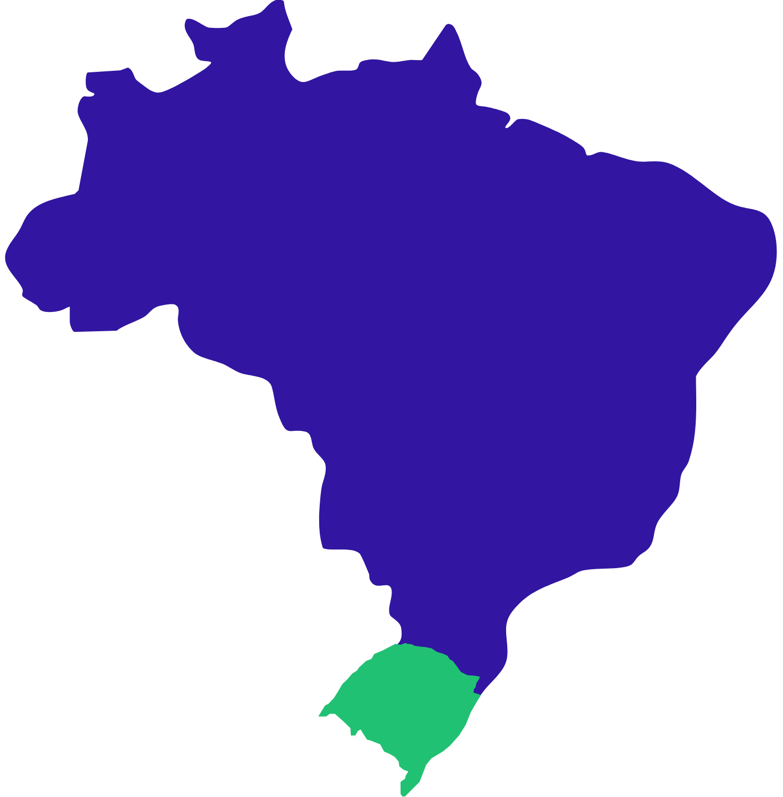

There is a growing controversy surrounding the use of the herbicide 2,4-D in southern Brazil, particularly in the state of Rio Grande do Sul. While the product is widely used by soybean farmers as an effective tool for weed control, repeated cases of herbicide drift have caused damage to sensitive crops such as grapes, apples, olives, and other fruits. As a result, the issue has triggered conflicts between different agricultural sectors, legal disputes, and new regulatory proposals aimed at controlling or restricting its application. This situation illustrates the broader challenge of balancing agricultural productivity with environmental protection, crop coexistence, and the safety of rural communities.
Interactive 3D Visualization